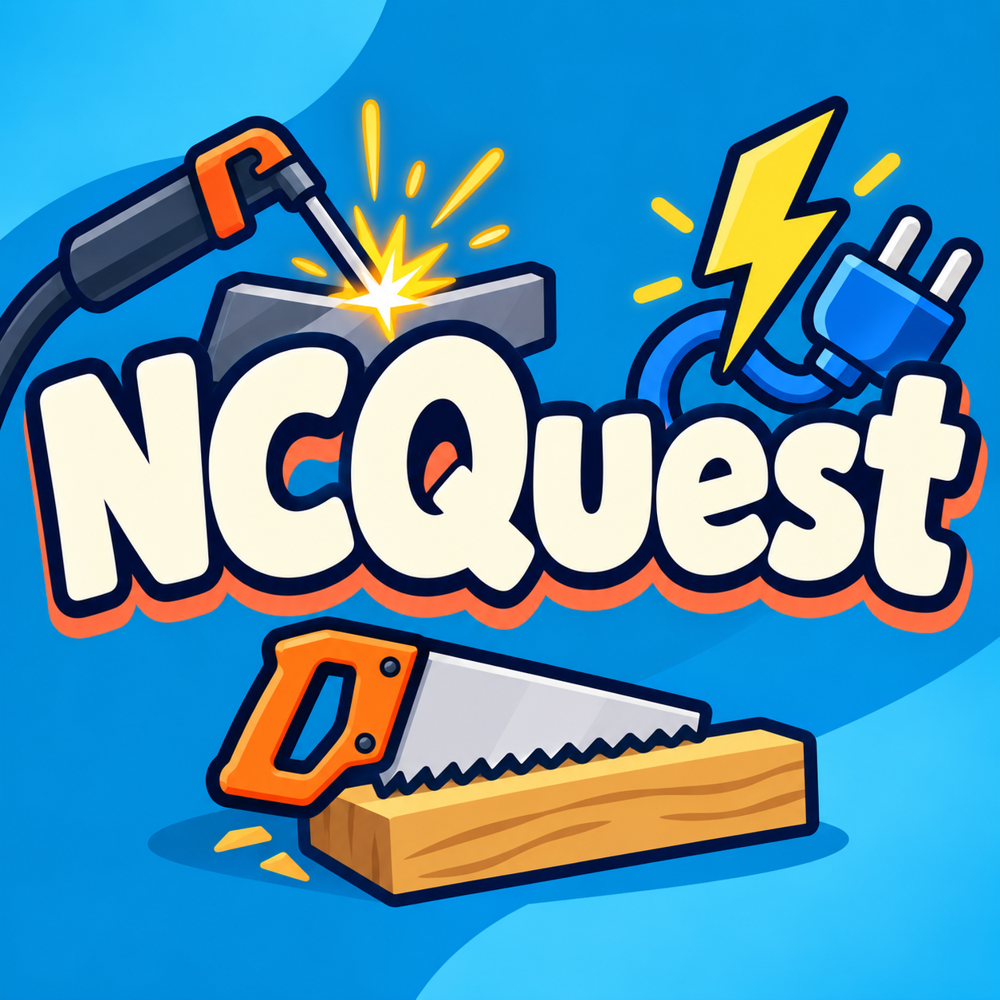

ABOUT
NCQUEST
An educational Roblox game simulating TESDA NC II competency assessments for Welding, Furniture Making (Finishing) and Electrical Maintenance.
- Role
- Lead programmer & group representative
- Timeline
- 5 months, May–September 2026
- Team
- 7 people — 3 programmers, 4 researchers
- Built with
- Roblox Studio, Luau
- Status
- Published and playable
The problem
TESDA NC II assessments cover trades where practising is expensive and, in welding or electrical work, genuinely dangerous. Students get limited hands-on time before assessment day. We built this project to help students get that practice safely before the real assessment.
What we built
Players start by talking to an NPC guide, who uses an in-game manual to teach the controls and explain what NCQUEST is about. After that, they use the teleport button to choose which course they want to take.
- Welding — Players learn how to wear PPE properly, which tools and metals are needed for each welding position, how to work out the right amperage for the thickness of the metal, and how to weld a metal properly.
- Furniture Making (Finishing) — Players learn why PPE matters before starting work, and how to fix, clean and maintain their equipment.
- Electrical Maintenance — Players learn how to use different types of multimeters, how to clean and maintain their tools, and how to wire an electrical outlet.
My role
I led the development of the project and was the developer of the Welding course. I also fixed bugs across the other courses.
How it was built
It was built in Roblox Studio with Luau. We used Roblox's built-in DataStore to save player progress, so we could focus on making the simulation educational instead of building our own save system. Its scoring system is based on how TESDA teachers grade students during an actual assessment.
What I'd do differently
I would focus on a single course, because keeping three simulations working meant constantly checking for bugs and errors. I would also split the game into separate modules instead of building it as one monolithic system.